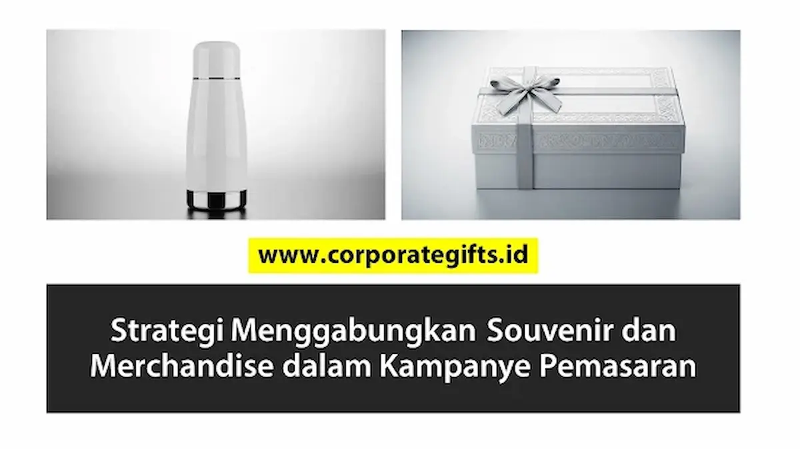

Corporate Gifts ID - Menggabungkan souvenir dan merchandise dalam satu kampanye pemasaran adalah strategi memadukan hadiah bernilai emosional eksklusif untuk tamu VIP atau klien kunci dengan produk merchandise promosi fungsional untuk khalayak umum. Langkah terpadu ini memungkinkan korporasi merangkul berbagai lapisan audiens secara presisi, sekaligus mempertahankan konsistensi identitas merek (brand consistency) di setiap titik sentuh (touchpoint) interaksi.
Alih-alih memilih salah satu jenis cinderamata, organisasi modern kini mengadopsi pendekatan holistik. Memberikan hadiah yang sama rata ke semua pihak sering kali mengaburkan nilai apresiasi bagi stakeholder utama atau sebaliknya, terlalu membebani anggaran promosi publik. Melalui perpaduan antara souvenir custom VIP dan merchandise perusahaan, promosi bisnis dapat berjalan efektif, terukur, dan berdampak jangka panjang.
Poin Kunci Sinergi Souvenir dan Merchandise:
- Segmentasi Presisi: Bedakan peruntukan hadiah berdasarkan tingkat kedekatan hubungan bisnis (VIP/Mitra Utama vs Peserta Publik).
- Hierarki Apresiasi: Menciptakan kesan perlakuan istimewa bagi klien strategis tanpa mengabaikan engagement khalayak luas.
- Efisiensi Anggaran: Mengoptimalkan pos biaya marketing dengan membagi alokasi unit premium bernilai tinggi dan unit fungsional skala massal.
- Konsistensi Identitas: Menjaga keselarasan warna korporat, tone pesan kampanye, dan standar kualitas material di semua lini produk.
Mengapa Perlu Menggabungkan Souvenir dan Merchandise?
Pendekatan terpadu ini memberikan keuntungan strategis ganda yang tidak dapat dicapai bila perusahaan hanya mengandalkan satu jenis item promosi:
- Menjangkau Berbagai Segmen Sekaligus: Souvenir prestisius diserahkan langsung pada sesi seremonial kepada tamu kehormatan, sementara merchandise dibagikan untuk membangun interaksi ramah dengan peserta pameran atau seminar.
- Menciptakan Tingkatan (Hierarki) Hadiah yang Elegan: Perusahaan dapat mengekspresikan rasa terima kasih sesuai kontribusi atau volume transaksi mitra bisnis secara profesional.
- Memperkuat Keberadaan Brand di Berbagai Konteks: Souvenir memperkuat reputasi formal di ruang direksi, sedangkan merchandise menyebarkan visibilitas brand di aktivitas harian masyarakat.
4 Pilar Strategi Implementasi Kampanye yang Efektif
Agar integrasi souvenir dan merchandise berjalan mulus dan mencapai target KPI pemasaran, terapkan 4 pilar implementasi berikut:
1. Segmentasi Audiens yang Akurat
Kelompokkan penerima berdasarkan peran dan kedekatan bisnis:
- VIP, Dewan Direksi & Mitra Kunci: Gift set eksklusif, plakat kristal, atau souvenir kantor berlapis kulit asli berukir nama.
- Konsumen, Peserta Event & Publik: Totebag kanvas, tumbler stainless reusable, gantungan kunci akrilik, atau sticker pack premium.
2. Keselarasan Tema dan Panduan Desain Korporat
Pastikan seluruh item memiliki kesatuan visual. Penggunaan palet warna brand guideline, jenis tipografi resmi, dan penempatan tagline kampanye harus selaras pada kemasan hardbox maupun merchandise satuan.
3. Integrasi Kampanye Lintas Saluran (Offline to Online / O2O)
Sematkan kode QR interaktif pada kemasan merchandise yang mengarahkan peserta ke landing page digital, kuis interaktif, atau challenge media sosial untuk memperluas jangkauan viral kampanye pemasaran Anda.
4. Kendali Mutu dan Standar Bahan (Quality Control)
Meskipun merchandise promosi diproduksi dalam jumlah besar dengan harga terjangkau, pastikan material tetap aman, rapi, dan tahan lama agar tidak merusak persepsi positif terhadap brand Anda.

Kombinasi paket gift set eksekutif dan merchandise promosi fungsional untuk mendukung aktivasi merek secara komprehensif.
Contoh Paket Gabungan Souvenir dan Merchandise
Berikut formula paket kombinasi yang terbukti sukses diaplikasikan dalam berbagai event korporasi nasional:
| Nama Paket Kampanye | Komposisi Isi Produk | Target Audiens & Kegunaan | Dampak Branding yang Dihasilkan |
|---|---|---|---|
| Executive Business VIP Pack | Plakat kristal 3D + Pen metal laser engraving + Agenda kulit eksklusif | Narasumber utama, dewan direksi, dan klien enterprise | Memperkuat citra prestise, otoritas industri, dan apresiasi formal |
| Event Public Engagement Kit | Totebag kanvas custom + Tumbler vacuum doff + Sticker vinyl brand | Peserta pameran, audiens seminar umum, media partner | Meningkatkan brand awareness massal dan exposure media sosial |
| Customer Loyalty Thank-You Set | Mug keramik matte + Voucher belanja + Polo shirt corporate bordir | Pelanggan setia program loyalitas, distributor aktif | Meningkatkan customer retention dan frekuensi repeat order |
Manfaat Strategis Sinergi Souvenir & Merchandise
Mengintegrasikan dua instrumen promosi ini membuka peluang efisiensi biaya serta daya ungkit reputasi yang luar biasa bagi perusahaan:
- Pengalaman Penerima yang Personal dan Relevan: Klien merasa dihargai dengan hadiah yang sesuai posisinya, sementara audiens umum merasa senang mendapatkan merchandise yang bermanfaat.
- Optimalisasi Efisiensi Anggaran Marketing: Tidak perlu menghabiskan dana besar untuk membagikan souvenir premium ke semua orang, cukup fokuskan dana secara proporsional.
- Penguatan Posisi Merek (Brand Positioning): Brand tampil matang dan siap berkomunikasi di segala tingkatan forum, dari ruang rapat direksi hingga ruang publik.
Matriks Sinergi Souvenir Eksklusif vs Merchandise Promosi
| Dimensi Evaluasi | Souvenir Eksklusif | Merchandise Promosi | Sinergi Kombinasi Keduanya |
|---|---|---|---|
| Fokus Utama | Nilai emosional, penghargaan relasi, prestise | Fungsionalitas harian, frekuensi pemakaian | Membangun ikatan relasi mendalam sekaligus memperluas jangkauan brand |
| Target Audiens | Terbatas (VIP, Stakeholder, Key Clients) | Massal (Konsumen, Peserta Acara, Karyawan) | Semua tingkatan pemangku kepentingan terlayani secara adil dan tepat |
| Gaya Kustomisasi | Subtle, elegan (Grafir Laser, Emboss Foil) | Promosional, kontras (Sablon, UV Print) | Tampil mewah di forum formal, atraktif di lingkungan publik |
Kesimpulan dan Langkah Eksekusi
Menggabungkan souvenir dan merchandise dalam satu kampanye adalah strategi cerdas dalam lanskap pemasaran modern. Dengan memadukan nilai simbolis souvenir dan daya guna merchandise, perusahaan Anda mampu mengunci loyalitas klien strategis sekaligus memperluas penetrasi pasar dengan efisiensi biaya yang terukur.